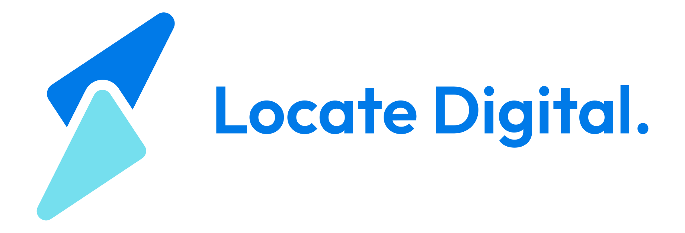

<title>Training 101 Setup</title>
<meta name="claude:viewport-fit-sides" content="cover">
<link rel="preconnect" href="https://fonts.googleapis.com">
<link rel="preconnect" href="https://fonts.gstatic.com" crossorigin>
<link href="https://fonts.googleapis.com/css2?family=Newsreader:opsz,wght@6..72,400;6..72,600&family=Public+Sans:wght@400;500;600;700&display=swap" rel="stylesheet">
<style>
/* Layout: light soft-ground cover with a live readiness card, then one column of numbered setup steps,
   a two-up "on the day" band, a client-data callout and a troubleshooting list. Locate Digital tokens. */
:root{
  --primary:#007ae8;
  --primary-ink:#0063bd;
  --secondary:#75dfee;
  --accent:#ff5900;
  --accent-dark:#e34f00;
  --ink:#0d0d0d;
  --muted:#63666b;
  --faint:#8e949c;
  --line:#e6e6e6;
  --bg:#ffffff;
  --bg-soft:#fbfcff;
  --row-alt:#f4f8fd;
  --surface:#ffffff;
  --tint:#eaf4fe;
  --dot:rgba(13,13,13,.06);
  --ok:#1f8a4c;
  --ok-soft:#e6f5ec;
  --warn-soft:#fff3eb;
  --code-bg:#f4f8fd;
  --shadow-sm:0 1px 1px rgba(13,13,13,.04),0 2px 5px rgba(13,13,13,.05),0 8px 20px -6px rgba(13,13,13,.08);
  --shadow-md:0 2px 6px rgba(13,13,13,.05),0 16px 36px -10px rgba(13,13,13,.14);
  --logo-light:block;
  --logo-dark:none;
  --heading:'Newsreader',Georgia,'Times New Roman',serif;
  --body:'Public Sans',system-ui,-apple-system,'Segoe UI',sans-serif;
  --radius:16px;
  --radius-sm:10px;
  --maxw:1080px;
}
@media (prefers-color-scheme: dark){
  :root:not([data-theme="light"]){
    --primary:#4aa6ff;--primary-ink:#7cc0ff;--secondary:#75dfee;--accent:#ff6a1a;--accent-dark:#ff7d38;
    --ink:#eef2f7;--muted:#a3abb5;--faint:#7d8691;--line:#27303b;--bg:#0e1217;--bg-soft:#121820;
    --row-alt:#151c26;--surface:#161d27;--tint:#16263a;--dot:rgba(255,255,255,.05);--ok:#4cc985;--ok-soft:#14291e;
    --warn-soft:#2a1a10;--code-bg:#101720;
    --shadow-sm:0 1px 2px rgba(0,0,0,.3),0 8px 20px -8px rgba(0,0,0,.5);
    --shadow-md:0 2px 6px rgba(0,0,0,.35),0 16px 36px -10px rgba(0,0,0,.6);
    --logo-light:none;--logo-dark:block;color-scheme:dark;
  }
}
:root[data-theme="dark"]{
  --primary:#4aa6ff;--primary-ink:#7cc0ff;--secondary:#75dfee;--accent:#ff6a1a;--accent-dark:#ff7d38;
  --ink:#eef2f7;--muted:#a3abb5;--faint:#7d8691;--line:#27303b;--bg:#0e1217;--bg-soft:#121820;
  --row-alt:#151c26;--surface:#161d27;--tint:#16263a;--dot:rgba(255,255,255,.05);--ok:#4cc985;--ok-soft:#14291e;
  --warn-soft:#2a1a10;--code-bg:#101720;
  --shadow-sm:0 1px 2px rgba(0,0,0,.3),0 8px 20px -8px rgba(0,0,0,.5);
  --shadow-md:0 2px 6px rgba(0,0,0,.35),0 16px 36px -10px rgba(0,0,0,.6);
  --logo-light:none;--logo-dark:block;color-scheme:dark;
}

*{box-sizing:border-box}
[hidden]{display:none!important}
body{margin:0;font-family:var(--body);font-size:16px;line-height:1.6;color:var(--ink);background:var(--bg);-webkit-font-smoothing:antialiased}
h1,h2,h3{font-family:var(--heading);font-weight:600;line-height:1.15;letter-spacing:-.015em;margin:0;text-wrap:balance}
p{margin:0}
a{color:var(--primary-ink);text-underline-offset:3px}
a:focus-visible,button:focus-visible,summary:focus-visible,input:focus-visible+label{outline:2px solid var(--primary);outline-offset:3px;border-radius:6px}
.wrap{max-width:var(--maxw);margin:0 auto;padding-left:max(16px,env(safe-area-inset-left,0px));padding-right:max(16px,env(safe-area-inset-right,0px))}
@media (min-width:720px){.wrap{padding-left:max(40px,env(safe-area-inset-left,0px));padding-right:max(40px,env(safe-area-inset-right,0px))}}
.label{font-family:var(--heading);font-weight:400;font-size:1rem;color:var(--primary-ink)}
.muted{color:var(--muted)}

/* brush underline on blue accent words */
.brush{position:relative;color:var(--primary);white-space:nowrap}
.brush::after{content:"";position:absolute;left:-2%;right:-2%;bottom:-.1em;height:.26em;background:var(--secondary);opacity:.9;z-index:-1;
  -webkit-mask:url("data:image/svg+xml,%3Csvg xmlns='http://www.w3.org/2000/svg' viewBox='0 0 200 20' preserveAspectRatio='none'%3E%3Cpath d='M2 14 C40 6 120 3 198 6 C150 10 70 13 4 18 Z' fill='black'/%3E%3C/svg%3E") center/100% 100% no-repeat;
          mask:url("data:image/svg+xml,%3Csvg xmlns='http://www.w3.org/2000/svg' viewBox='0 0 200 20' preserveAspectRatio='none'%3E%3Cpath d='M2 14 C40 6 120 3 198 6 C150 10 70 13 4 18 Z' fill='black'/%3E%3C/svg%3E") center/100% 100% no-repeat}
h1,h2{position:relative;z-index:0}

/* ---------- cover ---------- */
.cover{position:relative;overflow:hidden;border-bottom:1px solid var(--line);
  background:radial-gradient(circle at 1.5px 1.5px,var(--dot) 1px,transparent 0) 0 0/28px 28px,var(--bg-soft)}
.cover .glow{position:absolute;border-radius:50%;filter:blur(90px);pointer-events:none}
.cover .glow.a{width:520px;height:520px;background:radial-gradient(circle,var(--primary),transparent 70%);opacity:.14;top:-240px;right:-160px}
.cover .glow.b{width:420px;height:420px;background:radial-gradient(circle,var(--secondary),transparent 70%);opacity:.16;bottom:-220px;left:-120px}
.cover .wrap{position:relative;padding-block:40px 56px}
.topbar{display:flex;align-items:center;justify-content:space-between;gap:16px;flex-wrap:wrap;margin-bottom:48px}
.logo{height:30px;width:auto}
.logo.l{display:var(--logo-light)}
.logo.d{display:var(--logo-dark)}
.topbar .who{font-size:.86rem;color:var(--muted)}
.cover-grid{display:grid;grid-template-columns:1fr;gap:36px;align-items:start}
@media (min-width:900px){.cover-grid{grid-template-columns:1.25fr .9fr;gap:56px}}
.kicker{display:flex;align-items:center;gap:10px;margin-bottom:18px}
.kicker i{width:34px;height:1.5px;background:var(--accent);display:block;flex:none}
.kicker span{font-weight:600;font-size:.8rem;color:var(--primary-ink)}
.cover h1{font-size:clamp(2.3rem,5vw,3.6rem);max-width:640px}
.cover .sub{font-size:1.1rem;color:var(--muted);max-width:560px;margin-top:18px}
.cta-row{display:flex;flex-wrap:wrap;gap:12px 20px;align-items:center;margin-top:28px}
.btn{display:inline-flex;align-items:center;gap:8px;font-family:var(--body);font-weight:600;font-size:.95rem;border-radius:999px;padding:12px 22px;text-decoration:none;border:1px solid transparent;cursor:pointer;transition:transform .15s,background .15s,box-shadow .15s}
.btn-accent{background:var(--accent);color:#fff;box-shadow:0 8px 20px -8px rgba(255,89,0,.55)}
.btn-accent:hover{background:var(--accent-dark);transform:translateY(-1px)}
.btn svg{width:16px;height:16px}
.text-link{font-weight:600;font-size:.92rem;color:var(--primary-ink)}

/* readiness card */
.ready{background:var(--surface);border:1px solid var(--line);border-radius:var(--radius);box-shadow:var(--shadow-md);padding:26px}
.ready-head{display:flex;align-items:baseline;justify-content:space-between;gap:12px}
.ready-count{font-family:var(--heading);font-weight:600;font-size:2.6rem;line-height:1;font-variant-numeric:tabular-nums}
.ready-count small{font-size:1.1rem;color:var(--muted);font-weight:400}
.bar{height:8px;border-radius:999px;background:var(--row-alt);overflow:hidden;margin:16px 0 18px}
.bar span{display:block;height:100%;width:0;background:linear-gradient(90deg,var(--primary),var(--secondary));border-radius:inherit;transition:width .35s ease}
.ready ol{list-style:none;margin:0;padding:0;display:grid;gap:2px}
.ready li a{display:flex;align-items:center;gap:12px;padding:7px 8px;margin:0 -8px;border-radius:8px;text-decoration:none;color:var(--ink);font-size:.92rem}
.ready li a:hover{background:var(--row-alt)}
.tick{width:20px;height:20px;border-radius:50%;border:1.5px solid var(--line);flex:none;display:grid;place-items:center;font-size:.72rem;font-weight:700;color:var(--faint);font-variant-numeric:tabular-nums;transition:.2s}
.ready li.done .tick{background:var(--ok);border-color:var(--ok);color:#fff}
.ready li.done a span:last-child{color:var(--muted)}
.ready li .opt{margin-left:auto;font-size:.75rem;color:var(--faint)}
.ready-foot{display:flex;justify-content:space-between;align-items:center;gap:12px;margin-top:16px;padding-top:14px;border-top:1px solid var(--line);font-size:.82rem;color:var(--muted)}
.linkbtn{background:none;border:0;padding:0;font:inherit;color:var(--primary-ink);cursor:pointer;text-decoration:underline;text-underline-offset:3px}

/* facts strip */
.facts{display:grid;grid-template-columns:repeat(2,minmax(0,1fr));margin-top:44px;background:var(--surface);border:1px solid var(--line);border-radius:var(--radius);box-shadow:var(--shadow-sm)}
@media (min-width:720px){.facts{grid-template-columns:repeat(4,minmax(0,1fr))}}
.facts div{padding:16px 20px;font-size:.8rem;color:var(--muted);border-right:1px solid var(--line);border-bottom:1px solid var(--line);min-width:0}
.facts div:nth-child(2n){border-right:0}
.facts div:nth-child(n+3){border-bottom:0}
@media (min-width:720px){.facts div{border-bottom:0}.facts div:nth-child(2n){border-right:1px solid var(--line)}.facts div:last-child{border-right:0}}
.facts b{display:block;color:var(--ink);font-weight:600;font-size:.95rem;margin-top:3px}

/* ---------- sections ---------- */
section.band{padding-block:72px;border-bottom:1px solid var(--line)}
section.band.soft{background:var(--bg-soft)}
.sec-head{max-width:680px;margin-bottom:36px;display:grid;gap:10px}
.sec-head h2{font-size:clamp(1.8rem,3.2vw,2.4rem)}
.sec-head p{color:var(--muted);font-size:1.05rem}

/* OS switch */
.os-switch{display:inline-flex;gap:4px;padding:4px;border-radius:999px;background:var(--row-alt);border:1px solid var(--line);margin-top:6px;width:max-content;max-width:100%}
.os-switch button{font:inherit;font-weight:600;font-size:.88rem;border:0;background:transparent;color:var(--muted);padding:8px 18px;border-radius:999px;cursor:pointer;display:inline-flex;align-items:center;gap:8px}
.os-switch button[aria-pressed="true"]{background:var(--surface);color:var(--ink);box-shadow:var(--shadow-sm)}
.os-switch svg{width:15px;height:15px}

/* steps */
.steps{display:grid;gap:18px}
.step{display:grid;grid-template-columns:auto minmax(0,1fr);gap:0 20px;background:var(--surface);border:1px solid var(--line);border-radius:var(--radius);padding:26px;box-shadow:var(--shadow-sm);transition:border-color .2s,box-shadow .2s;scroll-margin-top:24px}
.step:hover{box-shadow:var(--shadow-md)}
.step.done{border-color:color-mix(in srgb,var(--ok) 45%,var(--line))}
.num{width:44px;height:44px;border-radius:50%;display:grid;place-items:center;font-family:var(--heading);font-weight:600;font-size:1.35rem;color:var(--primary-ink);background:var(--tint);transition:.2s}
.step.done .num{background:var(--ok);color:#fff}
.step-body{min-width:0;display:grid;gap:14px}
.step-top{display:flex;flex-wrap:wrap;align-items:baseline;justify-content:space-between;gap:6px 16px}
.step h3{font-size:1.45rem}
.time{font-size:.82rem;color:var(--muted);font-variant-numeric:tabular-nums;white-space:nowrap}
.step p{color:var(--ink);max-width:68ch}
.step p.muted{color:var(--muted)}
.how{margin:0;padding:0;list-style:none;display:grid;gap:10px;counter-reset:how;max-width:68ch}
.how li{position:relative;padding-left:32px;counter-increment:how}
.how li::before{content:counter(how);position:absolute;left:0;top:.1em;width:22px;height:22px;border-radius:50%;background:var(--row-alt);border:1px solid var(--line);font-size:.75rem;font-weight:700;display:grid;place-items:center;color:var(--muted)}
.bul{margin:0;padding:0;list-style:none;display:grid;gap:8px;max-width:68ch}
.bul li{position:relative;padding-left:22px}
.bul li::before{content:"";position:absolute;left:4px;top:.65em;width:7px;height:7px;border-radius:2px;background:var(--primary);transform:rotate(45deg)}
.ui{font-weight:600;white-space:nowrap}
kbd{font-family:var(--body);font-size:.82em;font-weight:600;padding:1px 7px;border-radius:6px;border:1px solid var(--line);border-bottom-width:2px;background:var(--surface)}
.req{display:grid;grid-template-columns:1fr;gap:10px}
@media (min-width:640px){.req{grid-template-columns:repeat(2,minmax(0,1fr))}}
.req div{background:var(--row-alt);border-radius:var(--radius-sm);padding:14px 16px;font-size:.9rem;min-width:0}
.req b{display:block;font-size:.78rem;font-weight:600;color:var(--muted);margin-bottom:2px}
.note{display:flex;gap:12px;align-items:flex-start;background:var(--tint);border-radius:var(--radius-sm);padding:14px 16px;font-size:.9rem;max-width:72ch}
.note svg{width:18px;height:18px;flex:none;margin-top:2px;color:var(--primary)}
.note.warn{background:var(--warn-soft)}
.note.warn svg{color:var(--accent)}
.step-foot{display:flex;align-items:center;justify-content:space-between;gap:12px;flex-wrap:wrap;padding-top:14px;border-top:1px dashed var(--line);margin-top:4px}
.check{display:inline-flex;align-items:center;gap:10px;cursor:pointer;font-weight:600;font-size:.9rem;user-select:none}
.check input{position:absolute;opacity:0;width:1px;height:1px}
.check .box{width:22px;height:22px;border-radius:6px;border:1.5px solid var(--faint);display:grid;place-items:center;transition:.15s;background:var(--surface)}
.check .box svg{width:14px;height:14px;opacity:0;color:#fff}
.check input:checked+.box{background:var(--ok);border-color:var(--ok)}
.check input:checked+.box svg{opacity:1}
.check input:focus-visible+.box{outline:2px solid var(--primary);outline-offset:2px}
.optional{font-size:.75rem;font-weight:600;color:var(--muted);background:var(--row-alt);border:1px solid var(--line);border-radius:999px;padding:2px 10px;margin-left:8px;vertical-align:middle;font-family:var(--body);letter-spacing:0}

/* prompt box */
.prompt{position:relative;background:var(--code-bg);border:1px solid var(--line);border-radius:var(--radius-sm);padding:16px 18px;padding-right:96px;font-size:.95rem;max-width:72ch}
.copy{position:absolute;top:10px;right:10px;font:inherit;font-size:.8rem;font-weight:600;border:1px solid var(--line);background:var(--surface);color:var(--ink);border-radius:999px;padding:6px 12px;cursor:pointer}
.copy:hover{border-color:var(--primary);color:var(--primary-ink)}

/* folder list */
.files{display:grid;grid-template-columns:1fr;gap:10px;max-width:760px}
@media (min-width:640px){.files{grid-template-columns:repeat(2,minmax(0,1fr))}}
.file{display:flex;gap:12px;align-items:flex-start;padding:12px 14px;border:1px solid var(--line);border-radius:var(--radius-sm);font-size:.9rem;min-width:0}
.file svg{width:20px;height:20px;flex:none;color:var(--primary);margin-top:1px}
.file b{display:block;font-weight:600}
.file span{color:var(--muted);font-size:.84rem}

/* on the day */
.two{display:grid;grid-template-columns:1fr;gap:20px}
@media (min-width:820px){.two{grid-template-columns:repeat(2,minmax(0,1fr))}}
.panel{background:var(--surface);border:1px solid var(--line);border-radius:var(--radius);padding:26px;display:grid;gap:14px;align-content:start;min-width:0}
.panel h3{font-size:1.3rem;display:flex;align-items:center;gap:10px}
.panel h3 svg{width:22px;height:22px;color:var(--primary)}

/* data callout */
.callout{display:grid;grid-template-columns:1fr;gap:28px;align-items:center}
@media (min-width:860px){.callout{grid-template-columns:1fr 1fr;gap:56px}}
.callout h2{font-size:clamp(1.8rem,3.2vw,2.4rem)}
.dos{display:grid;gap:10px}
.do{display:flex;gap:12px;align-items:flex-start;padding:14px 16px;border-radius:var(--radius-sm);background:var(--surface);border:1px solid var(--line);font-size:.92rem}
.do i{width:22px;height:22px;border-radius:50%;flex:none;display:grid;place-items:center;font-style:normal;font-weight:700;font-size:.8rem}
.do.yes i{background:var(--ok-soft);color:var(--ok)}
.do.no i{background:var(--warn-soft);color:var(--accent)}

/* troubleshooting */
.faq{display:grid;gap:10px;max-width:820px}
details{background:var(--surface);border:1px solid var(--line);border-radius:var(--radius-sm)}
summary{cursor:pointer;list-style:none;padding:16px 50px 16px 18px;font-weight:600;position:relative}
summary::-webkit-details-marker{display:none}
summary::after{content:"";position:absolute;right:20px;top:50%;width:9px;height:9px;border-right:2px solid var(--muted);border-bottom:2px solid var(--muted);transform:translateY(-70%) rotate(45deg);transition:transform .2s}
details[open] summary::after{transform:translateY(-30%) rotate(-135deg)}
details .ans{padding:0 18px 18px;color:var(--muted);display:grid;gap:10px;max-width:72ch}
details .ans b{color:var(--ink)}

/* IT handover + footer */
.handover{display:grid;grid-template-columns:1fr;gap:24px;align-items:start}
@media (min-width:860px){.handover{grid-template-columns:.9fr 1.1fr;gap:48px}}
.handover pre{margin:0;white-space:pre-wrap;word-break:break-word;font-family:var(--body);font-size:.88rem;line-height:1.6;color:var(--ink)}
.contact{display:grid;gap:8px}
.contact .addr{font-family:var(--heading);font-size:1.5rem;font-weight:600;user-select:all;word-break:break-all}
footer{padding-block:36px}
footer .wrap{display:flex;flex-wrap:wrap;gap:12px 24px;justify-content:space-between;align-items:center;font-size:.84rem;color:var(--muted)}
footer .logo{height:24px}

@media (max-width:520px){
  .step{grid-template-columns:1fr;gap:14px;padding:20px}
  .prompt{padding-right:18px;padding-bottom:52px}
  .copy{top:auto;bottom:10px}
}
@media (prefers-reduced-motion:reduce){*{transition:none!important;scroll-behavior:auto!important}}
</style>

<header class="cover">
  <div class="glow a"></div><div class="glow b"></div>
  <div class="wrap">
    <div class="topbar">
      
      
      <span class="who">Training 101 · An introduction to Claude</span>
    </div>
    <div class="cover-grid">
      <div>
        <div class="kicker"><i></i><span>Before your workshop or webinar</span></div>
        <h1>Get Claude <span class="brush">set up</span> before the session</h1>
        <p class="sub">Every demo in Training 101 runs in the Claude desktop app, and you'll do two hands-on blocks yourself. Work through this page a few days before so we can spend the session on the work, not on installs.</p>
        <div class="cta-row">
          <a class="btn btn-accent" href="https://claude.com/download" target="_blank" rel="noopener">
            <svg viewBox="0 0 24 24" fill="none" stroke="currentColor" stroke-width="2.2" stroke-linecap="round" stroke-linejoin="round"><path d="M12 3v12m0 0-5-5m5 5 5-5M4 19h16"/></svg>
            Download Claude
          </a>
          <a class="text-link" href="#step-1">Start with step 1</a>
        </div>
      </div>

      <aside class="ready" aria-label="Your setup progress">
        <div class="ready-head">
          <span class="label">Your setup</span>
          <span class="ready-count" id="count">0<small> of 6 done</small></span>
        </div>
        <div class="bar" aria-hidden="true"><span id="bar"></span></div>
        <ol id="mini">
          <li data-step="1"><a href="#step-1"><span class="tick">1</span><span>Check your computer</span></a></li>
          <li data-step="2"><a href="#step-2"><span class="tick">2</span><span>Set up your Claude account</span></a></li>
          <li data-step="3"><a href="#step-3"><span class="tick">3</span><span>Install the desktop app</span></a></li>
          <li data-step="4"><a href="#step-4"><span class="tick">4</span><span>Get Cowork ready</span></a></li>
          <li data-step="5"><a href="#step-5"><span class="tick">5</span><span>Make a practice folder</span></a></li>
          <li data-step="6"><a href="#step-6"><span class="tick">6</span><span>Send a test message</span></a></li>
          <li data-step="7"><a href="#step-7"><span class="tick">7</span><span>Add the mobile app</span><span class="opt">optional</span></a></li>
        </ol>
        <div class="ready-foot">
          <span id="readyMsg">About 30 minutes all up</span>
          <button class="linkbtn" id="reset" type="button">Reset</button>
        </div>
      </aside>
    </div>

    <div class="facts">
      <div>Time needed<b>About 30 minutes</b></div>
      <div>Computer<b>Windows 10+ or macOS 13+</b></div>
      <div>Claude plan<b>Pro or Team (paid)</b></div>
      <div>Tech skills<b>None. If you can email, you're fine</b></div>
    </div>
  </div>
</header>

<main>
<section class="band" id="steps">
  <div class="wrap">
    <div class="sec-head">
      <span class="label">The setup</span>
      <h2>Six steps, plus one extra</h2>
      <p>Tick each one off as you go. Your progress is saved in this browser, so you can come back later. Pick your computer below and the instructions will match it.</p>
      <div class="os-switch" role="group" aria-label="Choose your computer">
        <button type="button" data-os="win" aria-pressed="true">
          <svg viewBox="0 0 24 24" fill="currentColor"><path d="M3 5.5 10.5 4.4v7.1H3zM11.5 4.3 21 3v8.5h-9.5zM3 12.5h7.5v7.1L3 18.5zM11.5 12.5H21V21l-9.5-1.3z"/></svg>
          Windows
        </button>
        <button type="button" data-os="mac" aria-pressed="false">
          <svg viewBox="0 0 24 24" fill="currentColor"><path d="M16.4 12.6c0-2.4 2-3.6 2.1-3.7-1.1-1.7-2.9-1.9-3.5-1.9-1.5-.2-2.9.9-3.7.9-.8 0-1.9-.9-3.2-.8-1.6 0-3.1 1-4 2.4-1.7 3-.4 7.4 1.2 9.8.8 1.2 1.8 2.5 3 2.4 1.2 0 1.7-.8 3.1-.8 1.5 0 1.9.8 3.2.8s2.1-1.2 2.9-2.4c.9-1.4 1.3-2.7 1.3-2.8-.1 0-2.4-.9-2.4-3.9zM14 5.5c.7-.8 1.1-1.9 1-3-1 0-2.1.7-2.8 1.5-.6.7-1.2 1.8-1 2.9 1 .1 2.1-.6 2.8-1.4z"/></svg>
          Mac
        </button>
      </div>
    </div>

    <div class="steps">

      <!-- 1 -->
      <article class="step" id="step-1" data-step="1">
        <div class="num">1</div>
        <div class="step-body">
          <div class="step-top"><h3>Check your computer</h3><span class="time">2 minutes</span></div>
          <p>Claude runs on most laptops from the last five years. Check yours meets these before you install anything.</p>
          <div class="req">
            <div data-show="win"><b>Windows version</b>Windows 10 (version 2004 or later) or Windows 11. Not "S mode".</div>
            <div data-show="mac" hidden><b>macOS version</b>macOS 13 Ventura or later, on an Apple silicon or Intel Mac.</div>
            <div><b>Memory and space</b>8 GB of memory and about 20 GB free disk space.</div>
            <div><b>Internet</b>A steady connection. Claude works online for the whole session.</div>
            <div><b>Permission to install</b>On a work laptop you may need IT to approve the install.</div>
          </div>
          <ol class="how" data-show="win">
            <li>Press <kbd>Windows</kbd> + <kbd>I</kbd> to open Settings.</li>
            <li>Go to <span class="ui">System → About</span>. Check the edition and version under "Windows specifications", and the memory under "Installed RAM".</li>
          </ol>
          <ol class="how" data-show="mac" hidden>
            <li>Click the Apple menu in the top-left corner and choose <span class="ui">About This Mac</span>.</li>
            <li>Check the macOS version and the memory figure. For storage, open <span class="ui">System Settings → General → Storage</span>.</li>
          </ol>
          <div class="note">
            <svg viewBox="0 0 24 24" fill="none" stroke="currentColor" stroke-width="2" stroke-linecap="round"><circle cx="12" cy="12" r="9"/><path d="M12 8h.01M11 12h1v5h1"/></svg>
            <span>Using a work laptop? Send your IT person the note at the bottom of this page now. Installs can take a day or two to approve.</span>
          </div>
          <div class="step-foot">
            <label class="check"><input type="checkbox" id="done-1" data-step="1"><span class="box"><svg viewBox="0 0 24 24" fill="none" stroke="currentColor" stroke-width="3.2" stroke-linecap="round" stroke-linejoin="round"><path d="m5 12 5 5 9-10"/></svg></span>My computer is ready</label>
          </div>
        </div>
      </article>

      <!-- 2 -->
      <article class="step" id="step-2" data-step="2">
        <div class="num">2</div>
        <div class="step-body">
          <div class="step-top"><h3>Set up your Claude account</h3><span class="time">5 minutes</span></div>
          <p>You'll need a paid plan. Cowork, which we use in the second half, isn't available on the free plan. Use your work email so your account stays with the practice.</p>
          <ul class="bul">
            <li><b>Your practice is setting up Claude Team:</b> look for an invite email from Anthropic and accept it with your work email. Check your junk folder if it hasn't arrived. Don't buy a separate plan.</li>
            <li><b>You're setting it up yourself:</b> go to <a href="https://claude.ai" target="_blank" rel="noopener">claude.ai</a>, sign up with your work email, then choose the <b>Pro</b> plan under <span class="ui">Settings → Billing</span>. You can upgrade to Team later.</li>
          </ul>
          <p class="muted">Then open <span class="ui">Settings → Privacy</span> and check the setting about using your chats to improve Claude. Set it to match your practice's policy. If you don't have a policy yet, switch it off for now. We'll draft one together in the session.</p>
          <div class="step-foot">
            <label class="check"><input type="checkbox" id="done-2" data-step="2"><span class="box"><svg viewBox="0 0 24 24" fill="none" stroke="currentColor" stroke-width="3.2" stroke-linecap="round" stroke-linejoin="round"><path d="m5 12 5 5 9-10"/></svg></span>I can sign in on a paid plan</label>
          </div>
        </div>
      </article>

      <!-- 3 -->
      <article class="step" id="step-3" data-step="3">
        <div class="num">3</div>
        <div class="step-body">
          <div class="step-top"><h3>Install the desktop app</h3><span class="time">5 minutes</span></div>
          <p>The browser version is fine for quick questions, but the workshop runs in the desktop app because it can work with files on your computer.</p>
          <ol class="how" data-show="win">
            <li>Go to <a href="https://claude.com/download" target="_blank" rel="noopener">claude.com/download</a> and choose <span class="ui">Windows</span>.</li>
            <li>Open the file from your Downloads folder and follow the prompts. If Windows asks whether to allow the app to make changes, choose <span class="ui">Yes</span>.</li>
            <li>Open Claude from the Start menu and sign in with the account from step 2.</li>
            <li>Right-click the Claude icon in the taskbar and choose <span class="ui">Pin to taskbar</span>, so it's easy to find on the day.</li>
          </ol>
          <ol class="how" data-show="mac" hidden>
            <li>Go to <a href="https://claude.com/download" target="_blank" rel="noopener">claude.com/download</a> and choose <span class="ui">macOS</span>.</li>
            <li>Open the downloaded <span class="ui">.dmg</span> file and drag Claude into your <span class="ui">Applications</span> folder.</li>
            <li>Open Claude from Applications. If your Mac asks whether you're sure you want to open an app downloaded from the internet, choose <span class="ui">Open</span>.</li>
            <li>Sign in with the account from step 2. To keep it in your Dock, right-click the icon and choose <span class="ui">Options → Keep in Dock</span>.</li>
          </ol>
          <div class="note warn">
            <svg viewBox="0 0 24 24" fill="none" stroke="currentColor" stroke-width="2" stroke-linecap="round" stroke-linejoin="round"><path d="M12 3 2 20h20L12 3z"/><path d="M12 10v4M12 17h.01"/></svg>
            <span>Only download Claude from claude.com or claude.ai. Ignore "Claude" apps or browser extensions from other publishers.</span>
          </div>
          <div class="step-foot">
            <label class="check"><input type="checkbox" id="done-3" data-step="3"><span class="box"><svg viewBox="0 0 24 24" fill="none" stroke="currentColor" stroke-width="3.2" stroke-linecap="round" stroke-linejoin="round"><path d="m5 12 5 5 9-10"/></svg></span>The app is installed and I'm signed in</label>
          </div>
        </div>
      </article>

      <!-- 4 -->
      <article class="step" id="step-4" data-step="4">
        <div class="num">4</div>
        <div class="step-body">
          <div class="step-top"><h3>Get Cowork ready</h3><span class="time" data-show="win">5 minutes plus a restart</span><span class="time" data-show="mac" hidden>2 minutes</span></div>
          <p>Cowork lets Claude work with files and folders on your computer, such as sorting a client's documents or checking a bank statement. It's the part most likely to need a setting changed, so check it now rather than on the day.</p>
          <div data-show="win" style="display:grid;gap:14px">
            <p>On Windows, Cowork runs inside a small, sealed-off workspace on your computer. That needs one Windows feature switched on.</p>
            <ol class="how">
              <li>Click Start, type <span class="ui">Turn Windows features on or off</span> and open it.</li>
              <li>Tick <span class="ui">Virtual Machine Platform</span>, click <span class="ui">OK</span> and restart when asked.</li>
              <li>After the restart, press <kbd>Ctrl</kbd> + <kbd>Shift</kbd> + <kbd>Esc</kbd> to open Task Manager. Go to <span class="ui">Performance → CPU</span> and check that "Virtualization" says <b>Enabled</b>.</li>
              <li>Open Claude and switch to <span class="ui">Cowork</span> at the top of the app. When it asks for a folder, choose the practice folder from step 5 (or your Desktop for now).</li>
            </ol>
            <div class="note">
              <svg viewBox="0 0 24 24" fill="none" stroke="currentColor" stroke-width="2" stroke-linecap="round"><circle cx="12" cy="12" r="9"/><path d="M12 8h.01M11 12h1v5h1"/></svg>
              <span>If Virtualization says <b>Disabled</b>, it's switched off in your computer's start-up settings (the BIOS). That's a job for IT or whoever set up your laptop. Everything else in the workshop still works without it.</span>
            </div>
          </div>
          <div data-show="mac" hidden style="display:grid;gap:14px">
            <ol class="how">
              <li>Open Claude and switch to <span class="ui">Cowork</span> at the top of the app.</li>
              <li>When it asks for a folder, choose the practice folder from step 5 (or your Desktop for now).</li>
              <li>If your Mac asks to allow Claude access to that folder, choose <span class="ui">Allow</span>.</li>
            </ol>
          </div>
          <div class="step-foot">
            <label class="check"><input type="checkbox" id="done-4" data-step="4"><span class="box"><svg viewBox="0 0 24 24" fill="none" stroke="currentColor" stroke-width="3.2" stroke-linecap="round" stroke-linejoin="round"><path d="m5 12 5 5 9-10"/></svg></span>Cowork opens without an error</label>
          </div>
        </div>
      </article>

      <!-- 5 -->
      <article class="step" id="step-5" data-step="5">
        <div class="num">5</div>
        <div class="step-body">
          <div class="step-top"><h3>Make a practice folder</h3><span class="time">10 minutes</span></div>
          <p>Create a folder on your Desktop called <b>Claude workshop</b>. During the hands-on blocks you'll point Claude at real-looking work, so drop in whichever of these you have. None of it should contain a real client's details.</p>
          <div class="files">
            <div class="file"><svg viewBox="0 0 24 24" fill="none" stroke="currentColor" stroke-width="1.8" stroke-linejoin="round"><path d="M6 3h8l4 4v14H6z"/><path d="M14 3v4h4M9 12h6M9 16h6"/></svg><div><b>A bank statement and payslip</b><span>De-identified, or a blank template</span></div></div>
            <div class="file"><svg viewBox="0 0 24 24" fill="none" stroke="currentColor" stroke-width="1.8" stroke-linejoin="round"><path d="M4 6h16v12H4z"/><path d="m4 7 8 6 8-6"/></svg><div><b>A client follow-up email you wrote</b><span>Names and loan details removed</span></div></div>
            <div class="file"><svg viewBox="0 0 24 24" fill="none" stroke="currentColor" stroke-width="1.8" stroke-linejoin="round"><rect x="4" y="4" width="16" height="16" rx="2"/><path d="m4 16 5-5 4 4 3-3 4 4"/></svg><div><b>A recent social post or EDM</b><span>One you were happy with</span></div></div>
            <div class="file"><svg viewBox="0 0 24 24" fill="none" stroke="currentColor" stroke-width="1.8" stroke-linejoin="round"><circle cx="12" cy="12" r="8"/><circle cx="12" cy="12" r="3"/></svg><div><b>Your logo and brand colours</b><span>For the Claude Design demo</span></div></div>
            <div class="file"><svg viewBox="0 0 24 24" fill="none" stroke="currentColor" stroke-width="1.8" stroke-linejoin="round"><path d="M12 3 5 6v6c0 4 3 7.5 7 9 4-1.5 7-5 7-9V6z"/><path d="m9 12 2 2 4-4"/></svg><div><b>Any compliance checklist you use</b><span>Or an existing AI or IT policy</span></div></div>
            <div class="file"><svg viewBox="0 0 24 24" fill="none" stroke="currentColor" stroke-width="1.8" stroke-linejoin="round"><path d="M5 5h14v14H5z"/><path d="M9 9h6M9 12h6M9 15h3"/></svg><div><b>A list of jobs you'd hand off</b><span>Three tasks that eat your week</span></div></div>
          </div>
          <div class="step-foot">
            <label class="check"><input type="checkbox" id="done-5" data-step="5"><span class="box"><svg viewBox="0 0 24 24" fill="none" stroke="currentColor" stroke-width="3.2" stroke-linecap="round" stroke-linejoin="round"><path d="m5 12 5 5 9-10"/></svg></span>My folder is ready</label>
          </div>
        </div>
      </article>

      <!-- 6 -->
      <article class="step" id="step-6" data-step="6">
        <div class="num">6</div>
        <div class="step-body">
          <div class="step-top"><h3>Send a test message</h3><span class="time">1 minute</span></div>
          <p>Open the desktop app, start a new chat and paste this in. If Claude replies, you're ready for the session.</p>
          <div class="prompt" id="testPrompt">I'm a mortgage broker getting ready for an AI workshop. Give me three questions I should ask during the session to get the most out of it.<button class="copy" type="button" data-copy="testPrompt">Copy</button></div>
          <p class="muted">Bring the questions it gives you. We'll leave time to answer them.</p>
          <div class="step-foot">
            <label class="check"><input type="checkbox" id="done-6" data-step="6"><span class="box"><svg viewBox="0 0 24 24" fill="none" stroke="currentColor" stroke-width="3.2" stroke-linecap="round" stroke-linejoin="round"><path d="m5 12 5 5 9-10"/></svg></span>Claude replied</label>
          </div>
        </div>
      </article>

      <!-- 7 optional -->
      <article class="step" id="step-7" data-step="7">
        <div class="num">7</div>
        <div class="step-body">
          <div class="step-top"><h3>Add the mobile app <span class="optional">Optional</span></h3><span class="time">2 minutes</span></div>
          <p>Handy for jotting a file note between meetings or asking a quick question from the car park. Search "Claude" in the App Store or Google Play, check the publisher is Anthropic, and sign in with the same account. Your chats and Projects sync across devices.</p>
          <p class="muted">Claude can also connect to Outlook, Gmail, calendars and shared drives. Hold off on connecting these until your practice has agreed what Claude is allowed to see. We'll cover it in the policy block.</p>
          <div class="step-foot">
            <label class="check"><input type="checkbox" id="done-7" data-step="7"><span class="box"><svg viewBox="0 0 24 24" fill="none" stroke="currentColor" stroke-width="3.2" stroke-linecap="round" stroke-linejoin="round"><path d="m5 12 5 5 9-10"/></svg></span>Installed on my phone</label>
          </div>
        </div>
      </article>

    </div>
  </div>
</section>

<section class="band soft" id="on-the-day">
  <div class="wrap">
    <div class="sec-head">
      <span class="label">On the day</span>
      <h2>What to have with you</h2>
      <p>The session runs for three hours with a ten-minute break. You'll be typing along, so treat it like a working session rather than a presentation.</p>
    </div>
    <div class="two">
      <div class="panel">
        <h3><svg viewBox="0 0 24 24" fill="none" stroke="currentColor" stroke-width="1.8" stroke-linejoin="round"><rect x="3" y="5" width="18" height="12" rx="2"/><path d="M2 20h20"/></svg>In-person workshop</h3>
        <ul class="bul">
          <li>Your laptop, fully charged, plus the charger</li>
          <li>Your phone, in case Claude asks you to confirm a sign-in</li>
          <li>Your Claude password, or access to the email you sign in with</li>
          <li>The Wi-Fi details if we're at your office, so we can connect quickly</li>
          <li>Your answers to the pre-session questionnaire, if we've sent you one</li>
        </ul>
      </div>
      <div class="panel">
        <h3><svg viewBox="0 0 24 24" fill="none" stroke="currentColor" stroke-width="1.8" stroke-linejoin="round"><rect x="3" y="6" width="13" height="12" rx="2"/><path d="m16 10 5-3v10l-5-3"/></svg>Online webinar</h3>
        <ul class="bul">
          <li>Open the meeting link from your invite the day before, to install or update Zoom or Teams</li>
          <li>Headphones with a mic, so you can ask questions without echo</li>
          <li>A second screen if you have one: the webinar on one, Claude on the other</li>
          <li>A wired connection or a spot close to your router</li>
          <li>Join five minutes early, with Claude already open and signed in</li>
        </ul>
      </div>
    </div>
  </div>
</section>

<section class="band" id="client-data">
  <div class="wrap">
    <div class="callout">
      <div class="sec-head" style="margin:0">
        <span class="label">Before you upload anything</span>
        <h2>Keep real <span class="brush">client data</span> out of it for now</h2>
        <p>Under the NCCP, Best Interest Duty and responsible lending stay with you, whatever tool drafted the work. The FBAA advises members never to put client or company personal data into public AI tools. Until your practice has a written AI use policy, practise on dummy or de-identified files only.</p>
      </div>
      <div class="dos">
        <div class="do yes"><i>✓</i><span>Blank templates, dummy statements and documents with names, addresses and account numbers removed</span></div>
        <div class="do yes"><i>✓</i><span>Your own marketing, emails and checklists that don't name a client</span></div>
        <div class="do no"><i>✕</i><span>Real payslips, bank statements, IDs or fact finds from a live file</span></div>
        <div class="do no"><i>✕</i><span>Connecting your inbox or CRM before the practice has agreed what Claude can see</span></div>
      </div>
    </div>
  </div>
</section>

<section class="band soft" id="help">
  <div class="wrap">
    <div class="sec-head">
      <span class="label">If something's not working</span>
      <h2>Common hiccups</h2>
    </div>
    <div class="faq">
      <details>
        <summary>I can't see Cowork in the app</summary>
        <div class="ans">
          <p>Check you're signed in to a <b>paid</b> plan (Pro or Team). Cowork doesn't appear on the free plan.</p>
          <p>On Windows, make sure you installed from <b>claude.com/download</b>. Some older or company-managed installers leave Cowork out. Uninstall, download again from that page and reinstall.</p>
        </div>
      </details>
      <details>
        <summary>Cowork says it can't start, or keeps loading</summary>
        <div class="ans">
          <p>On Windows, repeat step 4: Virtual Machine Platform needs to be ticked, your computer restarted, and Task Manager should show <b>Virtualization: Enabled</b>.</p>
          <p>Close other heavy apps and check you have about 20 GB free. On computers with less than 8 GB of memory Cowork still runs, just slowly.</p>
        </div>
      </details>
      <details>
        <summary>My work laptop won't let me install it</summary>
        <div class="ans">
          <p>Your computer is managed by IT. Copy the note below and send it to them. If they can't approve it in time, bring a personal laptop or follow along in the browser at claude.ai. You'll miss the Cowork demo but can do everything else.</p>
        </div>
      </details>
      <details>
        <summary>I never got the Team invite email</summary>
        <div class="ans">
          <p>Check junk and spam for an email from Anthropic. If it's not there, ask whoever manages Claude at your practice to resend the invite to your work address. Don't sign up separately, or you'll end up with two accounts.</p>
        </div>
      </details>
      <details>
        <summary>I'm on Windows in S mode</summary>
        <div class="ans">
          <p>S mode only runs apps from the Microsoft Store, and Cowork won't run on it. Switching out is free but one-way: in Settings, go to <b>System → Activation</b> and look for "Switch out of S mode". On a work device, check with IT first.</p>
        </div>
      </details>
      <details>
        <summary>Do I need to know how to code?</summary>
        <div class="ans">
          <p>No. Everything in Training 101 runs in plain English through chat, Projects, Cowork, Claude Design and Routines. If you can write an email, you can do all of it.</p>
        </div>
      </details>
    </div>
  </div>
</section>

<section class="band" id="it-note">
  <div class="wrap">
    <div class="handover">
      <div class="sec-head" style="margin:0">
        <span class="label">For your IT person</span>
        <h2>Forward this note</h2>
        <p>If someone else manages your computer, copy this and send it a few days before the session.</p>
        <div class="contact" style="margin-top:12px">
          <span class="muted">Still stuck? Email Sam at Locate Digital</span>
          <span class="addr">sam@locatedigital.io</span>
        </div>
      </div>
      <div class="prompt" style="max-width:none">
        <pre id="itNote">Hi, I'm attending Locate Digital's Training 101 workshop on Claude and need the Claude desktop app installed before the session.

What's needed:
- Claude desktop app from https://claude.com/download (publisher: Anthropic)
- Windows 10 version 2004 (build 19041) or later, or Windows 11, x64 or Arm64, not S mode. Or macOS 13 or later.
- For Cowork (works with local files): hardware virtualisation enabled in BIOS/UEFI and the Windows "Virtual Machine Platform" feature turned on
- At least 8 GB RAM and about 20 GB free disk space
- Access to claude.ai and claude.com through our network

We'll be practising on dummy and de-identified files only. Thanks.</pre>
        <button class="copy" type="button" data-copy="itNote">Copy</button>
      </div>
    </div>
  </div>
</section>
</main>

<footer>
  <div class="wrap">
    
    
    <span>Requirements checked against Anthropic's help centre, November 2026. Claude is a product of Anthropic.</span>
  </div>
</footer>

<script>
(function(){
  var KEY='ld-claude-setup-v1', TOTAL=6;
  var state={done:{},os:null};
  try{var s=JSON.parse(localStorage.getItem(KEY)||'null'); if(s&&typeof s==='object'){state.done=s.done||{};state.os=s.os||null;}}catch(e){}
  function save(){try{localStorage.setItem(KEY,JSON.stringify(state));}catch(e){}}

  // OS switch
  function detect(){var p=(navigator.userAgentData&&navigator.userAgentData.platform)||navigator.platform||navigator.userAgent||'';return /mac/i.test(p)?'mac':'win';}
  function setOS(os){
    document.querySelectorAll('.os-switch button').forEach(function(b){b.setAttribute('aria-pressed',b.dataset.os===os?'true':'false');});
    document.querySelectorAll('[data-show]').forEach(function(el){el.hidden=el.dataset.show!==os;});
  }
  document.querySelectorAll('.os-switch button').forEach(function(b){
    b.addEventListener('click',function(){state.os=b.dataset.os;setOS(state.os);save();});
  });
  setOS(state.os||detect());

  // checklist
  var boxes=document.querySelectorAll('.check input');
  function render(){
    var n=0;
    boxes.forEach(function(cb){
      var k=cb.dataset.step, on=!!state.done[k];
      cb.checked=on;
      document.getElementById('step-'+k).classList.toggle('done',on);
      var li=document.querySelector('#mini li[data-step="'+k+'"]');
      if(li){li.classList.toggle('done',on);li.querySelector('.tick').textContent=on?'✓':k;}
      if(on&&+k<=TOTAL)n++;
    });
    document.getElementById('count').innerHTML=n+'<small> of '+TOTAL+' done</small>';
    document.getElementById('bar').style.width=(n/TOTAL*100)+'%';
    document.getElementById('readyMsg').textContent=n===TOTAL?'You’re ready for the session':n===0?'About 30 minutes all up':(TOTAL-n)+' to go';
  }
  boxes.forEach(function(cb){cb.addEventListener('change',function(){state.done[cb.dataset.step]=cb.checked;save();render();});});
  document.getElementById('reset').addEventListener('click',function(){state.done={};save();render();});
  render();

  // copy buttons
  document.querySelectorAll('.copy').forEach(function(btn){
    btn.addEventListener('click',function(){
      var src=document.getElementById(btn.dataset.copy);
      var text=Array.prototype.filter.call(src.childNodes,function(n){return n!==btn;}).map(function(n){return n.textContent;}).join('').trim();
      function ok(){btn.textContent='Copied';setTimeout(function(){btn.textContent='Copy';},1800);}
      function fallback(){var r=document.createRange();r.selectNodeContents(src.tagName==='PRE'?src:src.firstChild);var s=window.getSelection();s.removeAllRanges();s.addRange(r);btn.textContent='Press Ctrl+C';}
      try{navigator.clipboard.writeText(text).then(ok,fallback);}catch(e){fallback();}
    });
  });
})();
</script>
